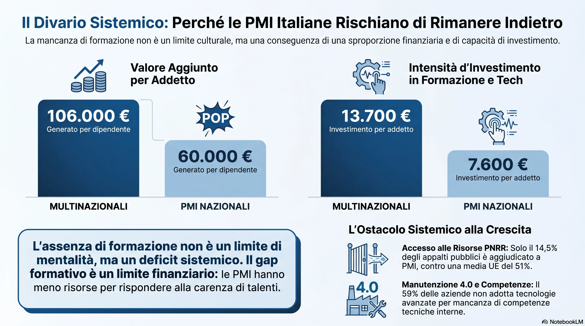
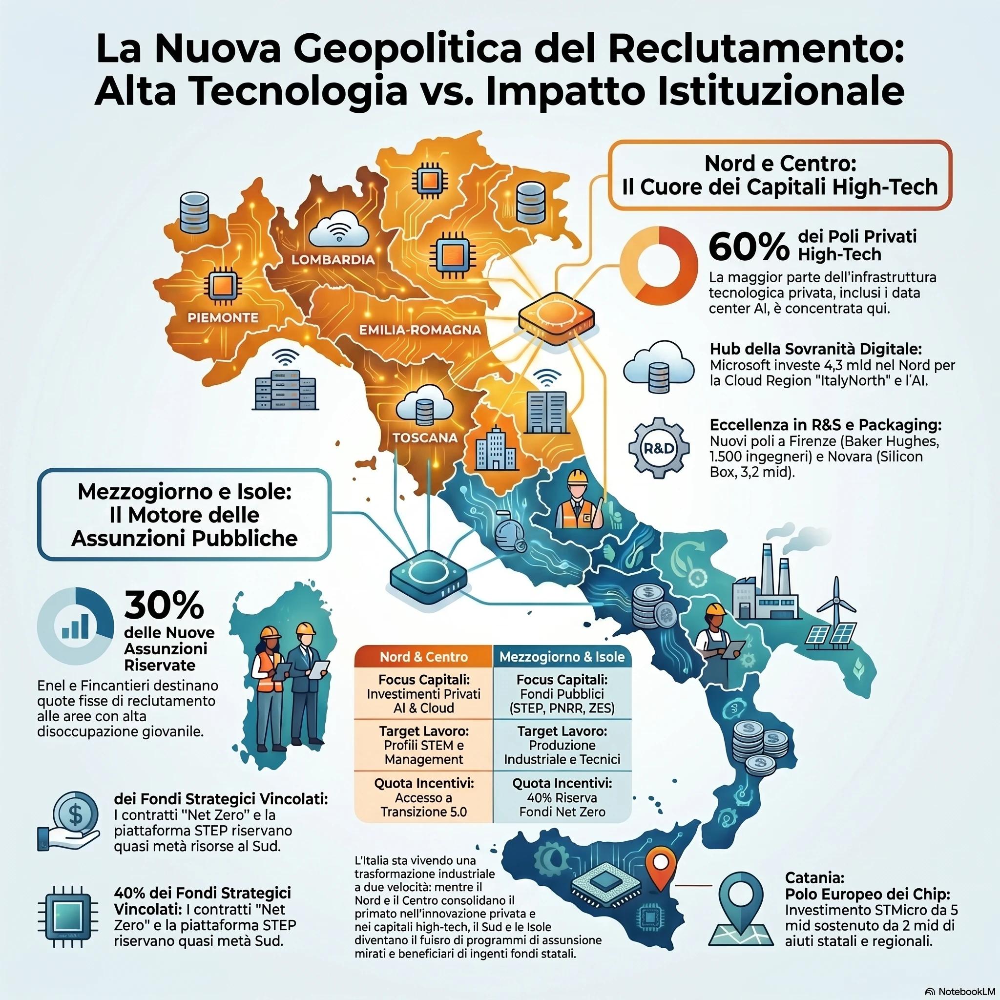
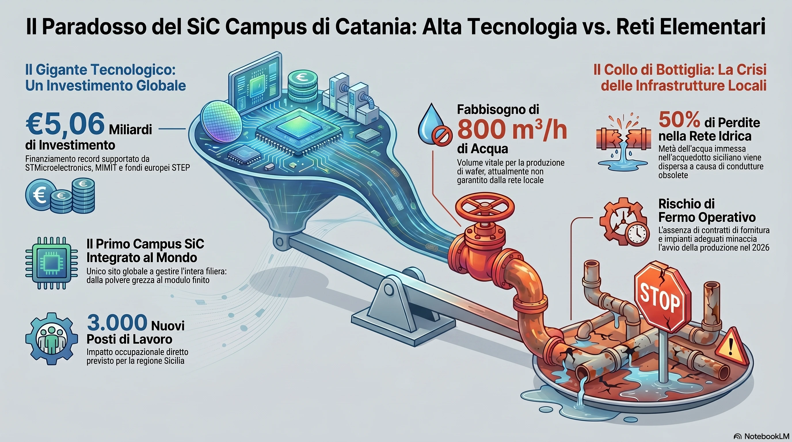

Ti è mai capitato di svegliarti la mattina con quel nodo fisso allo stomaco, con la sensazione frustrante di spingere al massimo un motore che però gira completamente a vuoto? Dai il cento per cento, ti fai carico di responsabilità non tue, accetti straordinari e compromessi con la convinzione profonda che ogni goccia di sudore stia finalmente tracciando la strada per la tua crescita. Poi ti fermi a guardare il cruscotto della tua vita e ti accorgi che il contachilometri professionale è immobile. Sei fermo nello stesso identico punto di prima, solo con molta più stanchezza addosso, il tempo che è volato via e la spiacevole sensazione di essere stato preso in giro.
Nel mondo del lavoro italiano, purtroppo, la sensazione costante è quella di guidare con un circuito idraulico che perde pressione.
Ti siedi al colloquio e la slide aziendale proietta una roadmap bellissima: percorsi lineari, scatti di livello, formazione continua. Sembra un'architettura software progettata secondo i principi SOLID. Poi firmi, entri in "officina" (che sia una software house o uno stabilimento di montaggio meccanico) e ti accorgi che il motore è bloccato. Nessun obiettivo a tempo, nessuna metrica, nessun feedback. Solo un management paternalistico che si ricorda di te solo quando minacci di dare le dimissioni.
A quel punto scatta il solito tarlo mentale: sono io che pretendo troppo o c'è un difetto di fabbrica nel sistema?
Poggiamo il calibro sul pezzo e misuriamo lo scostamento: il sistema ha un bug strutturale. Ma per capire dove perde pressione il circuito, dobbiamo fare un'operazione di reverse engineering sul mercato italiano, confrontarlo con i modelli europei (come quello olandese o tedesco) e mappare chi, in Italia, progetta davvero carriere con tolleranze millimetriche.
1. La "malattia" dell'inquietudine: quando il posto fisso diventa una condanna
C’è un dogma non scritto, in Italia, che si tramanda di generazione in generazione come un pezzo di ricambio originale ma ormai obsoleto: il mito del "posto fisso". Entra, tieni la testa bassa, non fare rumore e aspetta la pensione. Se hai un contratto a tempo indeterminato, hai vinto la lotteria dell'esistenza. Poco importa se le proprie competenze stanno arrugginendo, se l'ambiente è tossico o se passi otto ore al giorno a svuotare il mare con un secchiello.
Se decidi di alzare la testa e dire: "Io qui dentro non sto crescendo, me ne vado" – o peggio ancora, se cambi tre aziende in cinque anni alla ricerca di un percorso reale – la società ti guarda come se avessi una malattia contagiosa. Sei l'instabile. Quello strano. Quello che "non si accontenta mai".
Questa mentalità protettiva trasforma le aziende in paludi statiche. Il posto fisso, concepito originariamente come uno scudo di dignità, è diventato spesso una scusa per legittimare l'immobilismo manageriale. Chi ha fame di imparare, chi vuole alzare l'asticella delle proprie skill ogni mattina, viene isolato o trattato come un fattore di disturbo per un sistema che vuole solo addormentarsi nel proprio disordine organizzativo.
Ma la verità è un'altra: l'inquietudine professionale non è un sintomo di instabilità, è l'indicatore di un motore sano che rifiuta di girare senza olio.
2. Il grande bluff dei colloqui: la doppia morale aziendale
Durante i processi di selezione assistiamo a un paradosso quasi ridicolo. Le risorse umane e i recruiter passano i candidati al setaccio con la precisione di un controllo a raggi X sulle saldature di un telaio. Ti chiedono di dimostrare tutto: test tecnici, prove pratiche, referenze, attitudini psicologiche. Se un candidato gonfia leggermente una riga del curriculum, viene bollato come inaffidabile.
Ma vogliamo mettere una mano sulla coscienza e guardare l'altro lato della barricata? Il bluff delle aziende è spesso speculare, se non peggiore.
Si presentano ai colloqui splendenti, tirate a lucido come prototipi da salone espositivo. Ti raccontano di essere realtà "strutturate, moderne, con una mentalità aperta e inclini al confronto e alla crescita". Ti vendono l'idea di un percorso assistito. Poi, il primo giorno firmi il contratto, il secondo giorno ti buttano direttamente in produzione e pretendono che tu operi da esperto assoluto su impianti complessi o codebase legacy aggrovigliate.
Se chiedi aiuto, la risposta è un muro di gomma: "Il senior non ha tempo per formarti, ha già le sue consegne e deve fare altro. Arrangiati, la produzione deve andare avanti".
È l'equivalente di mettere un pilota appena diplomato alla guida di un jet supersonico senza simulatore, gridandogli dal basso di non schiantarsi perché il carburante costa. Non è onboarding; è sperare nella selezione naturale a spese della salute mentale del lavoratore. Se il candidato deve essere trasparente, l'azienda ha il dovere morale di non vendere fumo organizzativo.
3. Radiografia dei numeri: la spaccatura dimensionale e i dati di un mercato polarizzato
Per capire perché questa doppia morale sia così diffusa, dobbiamo abbandonare le opinioni ed esaminare i dati macroeconomici. Il problema dei percorsi di carriera in Italia è strettamente legato a una profonda asimmetria strutturale del nostro tessuto produttivo.
Secondo l'analisi di Confindustria contenuta nel Rapporto Industria, la produttività media della nostra manifattura è frenata dalla frammentazione dimensionale: oltre il 95% delle aziende è composto da micro e piccole imprese. Quando però si isola il segmento delle medie e grandi imprese "alla frontiera" dell'innovazione, si scopre che queste sono addirittura più produttive delle omologhe tedesche, francesi e spagnole.
La differenza tra lavorare in una PMI padronale disorganizzata e una grande azienda leader si misura in cifre impietose:
- l'effetto multinazionale: le multinazionali in Italia rappresentano appena lo 0,3% - 0,4% del totale delle imprese registrate. Eppure, occupano quasi il 10% della forza lavoro, generano il 17,4% del valore aggiunto nazionale e coprono oltre il 26,8% della spesa complessiva in ricerca e sviluppo (vedi il report di EY Attractiveness Survey Italy).
- Il divario di investimento pro-capite: il valore aggiunto per addetto in una multinazionale o grande azienda strutturata sfiora i 106.000 euro, contro i soli 60.000 euro delle aziende nazionali non integrate nelle filiere globali. Questo si traduce in una capacità di investimento pro-capite di 13.700 euro per lavoratore nelle grandi realtà, contro i 7.600 euro delle piccole realtà locali (dati emersi dalle indagini sul sistema industriale di PwC M&A Outlook 2026).

Ecco svelato il mistero del perché il tuo "piano di crescita" sia svanito nel nulla: nella maggior parte delle PMI italiane non mancano solo la volontà o la cultura manageriale, manca proprio la massa critica finanziaria per sostenere un percorso di sviluppo strutturato del personale.
4. La geografia della transizione: la spaccatura tra nord, centro e sud
Il secondo parametro da calibrare è la distribuzione geografica. L'analisi degli ecosistemi dell'innovazione in Europa evidenzia che in Italia la transizione tecnologica e industriale si muove a due velocità drammaticamente diverse.
La concentrazione di brevetti, tecnologie emergenti e investimenti in digitalizzazione e transizione 5.0 è fortemente polarizzata in quattro regioni del nord e del centro: Lombardia, Emilia-Romagna, Piemonte e Lazio. Queste regioni fungono da veri e propri hub nazionali dell'innovazione, capaci di catalizzare mega-investimenti (come l'accordo siglato al Ministero delle Imprese e del Made in Italy per lo stabilimento di advanced packaging da 3,2 miliardi di euro di Silicon Box a Novara).
Tuttavia, i grandi piani industriali di utility ed energia stanno cercando di compensare questo divario inserendo delle "quote sud" obbligatorie per favorire l'occupabilità stabile nel Mezzogiorno:
- il piano Enel (reti intelligenti): all'interno del piano da 1,2 miliardi di euro descritto da Enel, l'azienda ha blindato ben il 30% dei nuovi ingressi di giovani tecnici ed operai esclusivamente nel sud Italia e nelle isole.
- invitalia e le catene di approvvigionamento: nei bandi gestiti dall'agenzia nazionale (come lo sportello "Net Zero" o i Contratti di Sviluppo di Invitalia), i decreti impongono una riserva finanziaria minima del 40% per le regioni meridionali per stimolare l'occupazione tecnica qualificata.
- La transizione energetica meridionale: secondo gli studi del Piano Nazionale di Ripresa e Resilienza (PNRR), entro il 2030 fino al 60% dell'energia rinnovabile nazionale potrebbe essere generata nel Mezzogiorno, con una stima di creazione di oltre 200.000 nuovi posti di lavoro tecnici.

5. Il filtro dei settori: dove conviene "scommettere"
Non tutti i comparti industriali viaggiano con lo stesso regime di giri. Se vuoi un percorso di carriera che scatti con precisione, devi analizzare l'intensità degli investimenti e le tendenze di consolidamento delle filiere (M&A).
Nel 2026, la polarizzazione dei settori si divide nettamente:
- I settori caldi (technology, power e utilities, pharma-chimica): Rappresentano quasi i due terzi delle operazioni. Prysmian Group, ad esempio, ha pianificato un piano da 2,7 miliardi di euro per incrementare la capacità produttiva di cablaggi intelligenti. Terna risponde con il record storico di 17,7 miliardi di euro al 2028 per la digitalizzazione delle reti. Qui il budget per la formazione delle persone è parte integrante dei piani approvati dai consigli di amministrazione.
- I settori freddi o in ristrutturazione (automotive tradicional, subfornitura frammentata): Mentre la meccatronica di precisione regge, l'automotive tradizionale sconta una contrazione di volumi e dazi internazionali, rendendo i piani di crescita dei lavoratori interni i primi a essere tagliati o congelati per fare cassa.
Eppure, a fronte di questi miliardi di euro in transizione tecnologica, emerge un dato allarmante: secondo una recente indagine condotta da TEHA Group e Microsoft Italia, ben il 63% degli imprenditori italiani dichiara una mancanza cronica di competenze interne per gestire l'intelligenza artificiale generativa e la digitalizzazione industriale (vedi i dettagli sul piano di investimenti Microsoft in Italia).
Questo gap è la radice del "grande bluff": le aziende non sanno come formarti perché loro stesse non possiedono le competenze interne per farlo. Di conseguenza, preferiscono "comperare" l'esperienza pronta sul mercato, gettando il neofita direttamente in produzione e sperando che sopravviva per non rallentare le scadenze.
6. La mappa dei livelli: il CCNL e l'illusione della burocrazia
In Italia, l'unico vero paracadute normativo teoricamente ci sarebbe. Il rinnovo del CCNL Metalmeccanici (compreso lo schema orientato ai parametri "ESG" per il 2024-2028) ha ridisegnato i vecchi livelli numerici del '73, sostituendoli con quattro campi di ruolo dinamici (da D1 a A1). Sulla carta, introduce persino l'obbligo di 24 ore di formazione continua a triennio registrate digitalmente (su piattaforme come MetApprendo) e garantisce l'accesso diretto al livello C3 per i diplomati ITS o laureati triennali STEM che svolgono mansioni coerenti.
Ma qual è il problema? Che nella maggior parte delle PMI, questa struttura viene usata solo come griglia retributiva minima, non come uno strumento di sviluppo dinamico. Il passaggio di livello superiore scatta per vie burocratiche o temporali forzate, quasi mai come coronamento di un percorso di crescita professionale pianificato insieme al management.
7. Chi ha davvero un "reparto R&D" delle carriere in Italia?
I dati di fatto dimostrano che se vuoi un piano di crescita che non sia un miraggio, devi guardare a quelle realtà che gestiscono il capitale umano con la stessa precisione con cui si progetta una linea di montaggio automatizzata o un'architettura software resiliente. Esiste un ecosistema di aziende leader che ha istituzionalizzato il percorso di carriera:
- Terna e Snam: gestiscono infrastrutture critiche dove l'improvvisazione equivale al blackout. Terna ha investito 100 milioni di euro nel progetto Tyrrhenian Lab, creando master specialistici di 12 mesi con assunzione immediata garantita per posizioni avanzate su IoT e automazione. Snam risponde con lo Snam Institute e percorsi operations strutturati su feedback quantitativi e qualitativi continui, guidando i tecnici passo dopo passo da operatori di campo a ruoli di coordinamento territoriale.
- Ferrari e Lamborghini: Nella Motor Valley la trasmissione del sapere è un asset industriale. Ferrari usa la "Scuola dei Mestieri" per il passaggio di consegne generazionale dai tecnici senior ai junior, e ha investito sul nuovo polo M-TECH Alfredo Ferrari per connettere l'istruzione ai contesti di fabbrica. Lamborghini punta sul progetto DESI (Dual Education System Italy) per certificare le competenze meccatroniche direttamente sul campo, alternando teoria e pratica in azienda al 55%.
- Leonardo: Con il programma Officina Leonardo permette a giovani diplomati di frequentare una laurea triennale STEM lavorando in azienda in apprendistato part-time retribuito, garantendo al termine l'assunzione a tempo indeterminato.
- Michelin Italiana: Nel primo anno offre oltre 1000 ore di formazione (aula e on-the-job). Una volta stabilizzato, ogni manutentore segue una media di 100 ore di formazione annue con feedback strutturati ogni sei mesi per mappare le aree da potenziare (vedi Michelin Careers).
8. Il paradosso delle grandi opere: piani perfetti, infrastrutture fragili
Ma anche in questo scenario apparentemente idilliaco, c'è un'ombra pesante che rispecchia la fragilità del sistema-Paese. Ed è qui che dobbiamo essere spietati nell'analisi diagnostica.
Prendiamo il caso emblematico di STMicroelectronics a Catania. Un progetto monumentale: la costruzione della prima fabbrica al mondo completamente integrata verticalmente per la produzione di wafer in carburo di silicio (SiC) da 200 mm. Un investimento complessivo di 5,06 miliardi di euro destinato a creare circa 3.000 nuovi posti di lavoro diretti in Sicilia (vedi la rassegna del cantiere sul sito della Regione Siciliana).
Sulla carta è un capolavoro di pianificazione industriale. Poi, scendi nel mondo reale e scopri che lo stabilimento rischia di non partire perché manca l'acqua. L'impianto richiede fino a 800 metri cubi d'acqua all'ora per raffreddare i processi di produzione dei chip, ma la rete idrica locale non è pronta e perde oltre il 50% del flusso a causa di tubature fatiscenti (leggi l'inchiesta dettagliata su DMove.it).
Lo stesso vale per il colosso di Singapore Silicon Box, che ha annunciato un impianto di advanced packaging da 3,2 miliardi di euro a Novara. Eppure, l'area di Agognate resta un prato verde impantanato tra iter burocratici e incertezze strutturali.
La metafora per la tua carriera è brutale: un'azienda può mostrarti la slide con il piano di crescita da 5 miliardi di euro, ma se manca l'acqua nelle tubature — ovvero se mancano la cultura manageriale di base, i budget effettivi per la formazione e l'infrastruttura per farti lavorare bene — quel piano resterà un deserto industriale.

9. La rivoluzione dell'ordine: migliorare il proprio metro quadro
Se il sistema intorno a noi è rigido, disorganizzato o miope, la tentazione immediata è quella di arrendersi al cinismo. Di spegnere il cervello, fare il minimo indispensabile per non essere licenziati e timbrare il cartellino con l'anima già altrove.
Ma c'è una terza via. Una via che non richiede il permesso di nessun manager e che poggia sulla dignità dell'artigiano, sia esso con la chiave inglese in mano o davanti a una tastiera a scrivere codice in C#.
Significa decidere di fare bene le cose per se stessi, prima ancora che per l'azienda. Significa tenere in ordine l'officina: rimettere a posto gli attrezzi sui pannelli magnetici, ripulire il banco a fine turno, fare refactoring di quel blocco di codice disordinato che nessun altro vuole toccare. Lavorare nel pulito, logico e fisico, permette a tutti di lavorare meglio, riduce gli errori e risparmia tempo.
Significa creare un ambiente sereno intorno a sé. Aiutare un collega in difficoltà che magari ha paura di chiedere, non per mettersi in mostra, ma per il semplice rispetto del lavoro altrui. Fare una battuta per spezzare la tensione quando la linea di produzione si blocca o quando il server va giù, mantenendo sempre la calma e il rispetto verso chiunque, dal direttore di stabilimento al ragazzo delle pulizie.
Queste piccole azioni quotidiane non sono concessioni a un capo che non le merita. Sono l'affermazione della propria professionalità. Se tratti il tuo lavoro con cura millimetrica, stai addestrando te stesso a standard elevati. Stai costruendo la tua solidità professionale. E quando deciderai di cambiare officina — perché quel momento arriverà, e non dovrai averne paura — non lascerai indietro solo un vecchio badge, ma porterai con te un metodo di lavoro, un'etica e una precisione che nessuna azienda disorganizzata potrà mai toglierti.
Ricorda sempre: tu non sei la palude o l'officina disordinata in cui ti trovi a lavorare oggi. Tu sei la cura, l'attenzione e la precisione che decidi di applicare a ogni singolo millimetro delle tue mansioni.
Ti ritrovi in questa spaccatura del mercato italiano? Anche nella tua azienda il piano di crescita è svanito dal secondo giorno o hai avuto la fortuna di far parte di un'officina di precisione? Parliamone.
- Email: doppiam1@gmail.com — per scambiarci dettagli tecnici, storie di officina o codice C#
- LinkedIn: Marco Morello — per connetterci e confrontarci quotidianamente sul nostro viaggio professionale